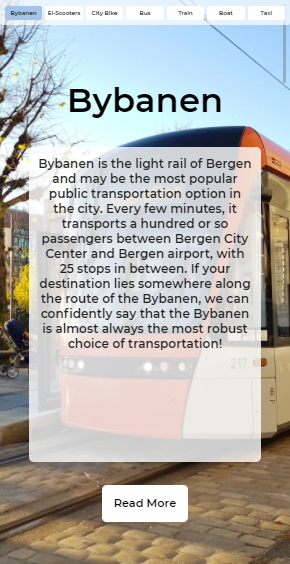
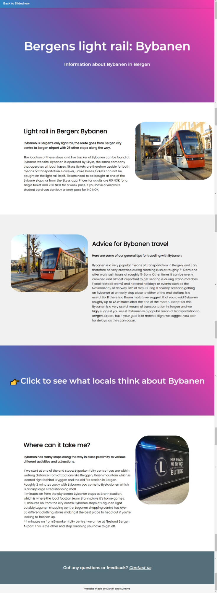

Statisk web design
prosjekt: HTML/CSS
Prosjektet ble gjennomført høstsemesteret 2021. Arbeidet ble gjennomført delvis i samarbeid med en annen student, og delvis individuelt. Målet for prosjektet var å lage en statisk nettside som skulle informere om kollektiv transport i Bergensområdet.

Oppgaven i faget dreiet seg om å lage en informativ nettside med annet fokus enn allerede eksisterende nettsider. Vi begynte med å brainstorme og undersøke hvilke av ideene der ute som allerede eksisterer. Etterhvert kom vi fram til en problemstilling, basert på egene erfaringer: en nettside som informerer om mulige transportmidler, hovedsaklig rettet mot turister eller andre som ikke er kjent med de ulike fremkomstmidlene i byen.
Videre begynte vi sammen prosessesen om å brainstorme ideer til UI og informasjonsarkitektur. Målet var en webside som lett kunne navigeres både på PC og mobil. Vi kom fram til at vi ønsket å bruke et slideshow som navigasjonsmeny, vi kunne på denne måten bruke deskriptive bilder av de ulike transportmidlene til å formidle til brukerene. Vi fant ut at dette ville hjelpe brukerne, som hovedsaklig er turister, og derfor i stor grad ukjent med begreper som "Bybanen". Under kan du se websisden på mobil:
Etter UI-design delen var ferdig gikk vi over til å ha hovedfokus på å utvikle hver vår del av websiden ved hjelp av HTML, CSS og noe JavaScript. Alt på websiden måtte derimot fungere helt uten JavaScript, det var derfor begrenset til estetiske/ikke-funksjonelle deler av websiden vi kunne benytte det til. Jeg tok hovedansvaret for websidens "subpages", mens studenten jeg sammerbeidet med tok ansvaret for forsiden, med navigasjonsmenyen. Under kan du se et skjermbilde av hvordan disse ble:
